Main Panels
The Animaze Editor has 4 main panels to work with, and a Viewport. We will detail them and explain in depth each of their features. The Panels can be rearranged around the Viewport as per your personal preference if needed, just by holding down the left mouse button on the Panel name bar and dragging them where desired.
The Hierarchy Panel
In this Panel, you are able to see the object list in your scene, set in a hierarchic display. The objects can be manually swapped/rearranged in the hierarchy. The selected mesh items will be displayed with a green halo in the Viewport, where your model is, thus being easier to identify it.
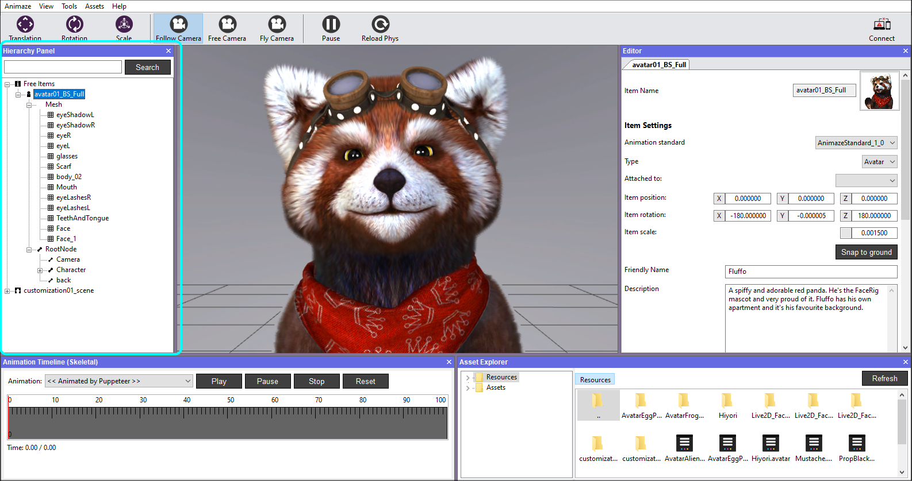
Mouse button actions:
- Left click on an item in the Hierarchy Panel, will display details such as Name, Description, Position etc. in the Editor Panel to the right. Here you can change avatar details, add/remove customizations & Special Actions, configure camera settings.
- Left click on a mesh’s icon will lock it and it will not be selectable in the Viewport anymore. Click again to unlock it.
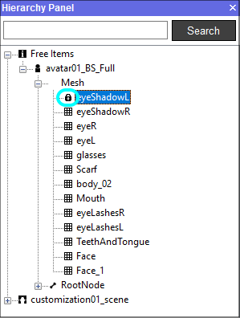
- Left click on a mesh’s text will display the Material Properties in the Editor Panel to the right.
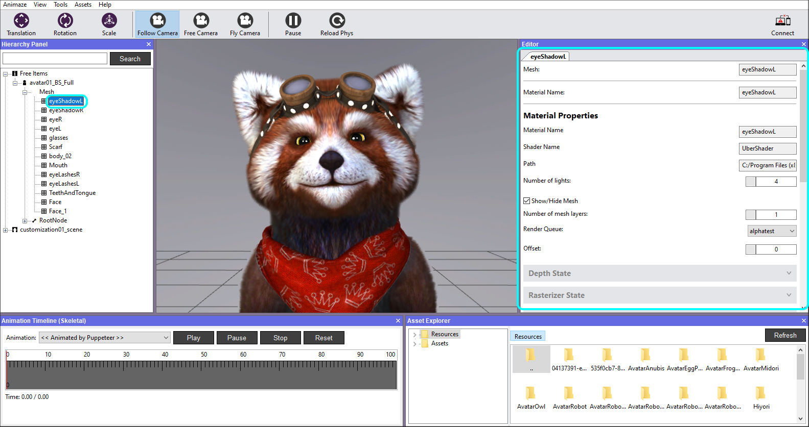
- Right click on a mesh to focus the camera on it.
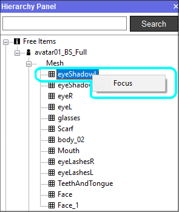
- Right click on the avatar for the following actions:
Add – attach new particle system, light, prop, sound item, skybox, location.
Save item – saves the item in the current state.
Bundle – creates a bundle of the avatar, which can be afterwards uploaded on the Animaze Storefront.
Check integrity – verifies the integrity of all the files.
Reload – cleanly reloads the Animaze Item (deletes all references from memory and loads it from disk).
Clone – makes a clone of the Animaze Item in memory (need to save clone to keep it on disk).
Save item as – saves the current avatar as new and loads it, leaving its previous version unchanged.
Reset camera – frames the avatar in the Viewport.
Save all materials – saves all the materials that suffered changes.
Remove item – remove the item fron the scene.
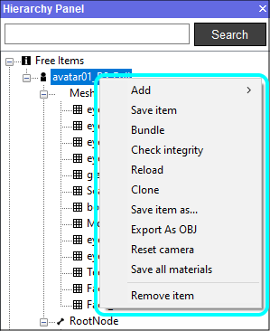
- Left clicking on a bone in the Hierarchy Panel will locate it on the avatar’s body, visible in wireframe mode by pressing the “i” key on your keyboard.
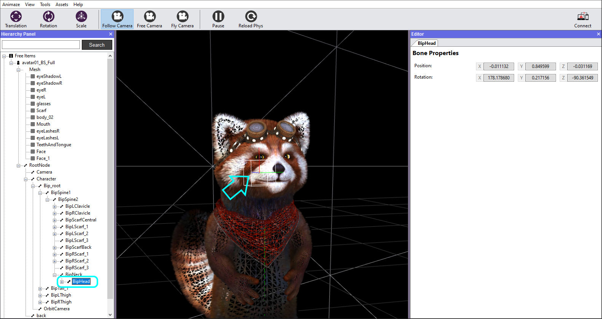
- Right clickingon any bone in the Skeletal hierarchy of the model, it will open a set of possible and self-explanatory actions, such as:
- attach a new particle system, light, prop, item, collider >> after which you can also set values or toggle with their properties.
- Right clicking the Scene will prompt you to either save it, make additions of lights, props, colliders, particle systems or bundle the whole scene together. Multiple lights can be added/removed in a scene.
The Viewport
In this panel you can see the avatar or any object you are working with. Use it to select and position the scenery, avatars, props, cameras, lightning. Upon any selection of an object, the correspondent in the Hierarchy Panel will be highlighted in a gray tint, thus being easier to identify in that panel as well.
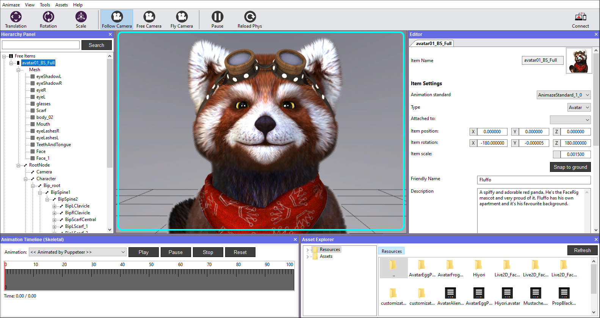
The scene has a set of navigation controls in the top bar, to help you move around quickly and efficiently:
Translation button
When having the object selected, this button will move it on the XYZ axis by dragging it with the left mouse button. It can also be moved by manually modifying the values in the Editor panel.
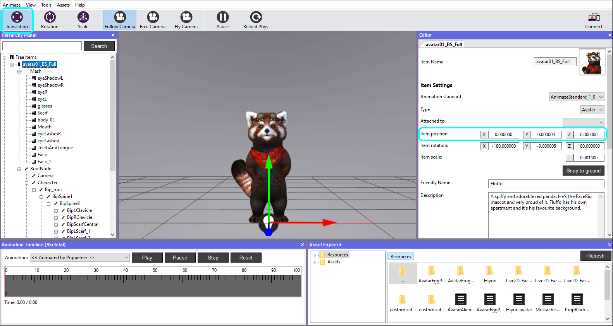
Rotation button
When having the avatar selected, this button will rotate it on the XYZ axis by dragging it with the left mouse button. It can also be rotated by manually modifying the values in the Editor panel.
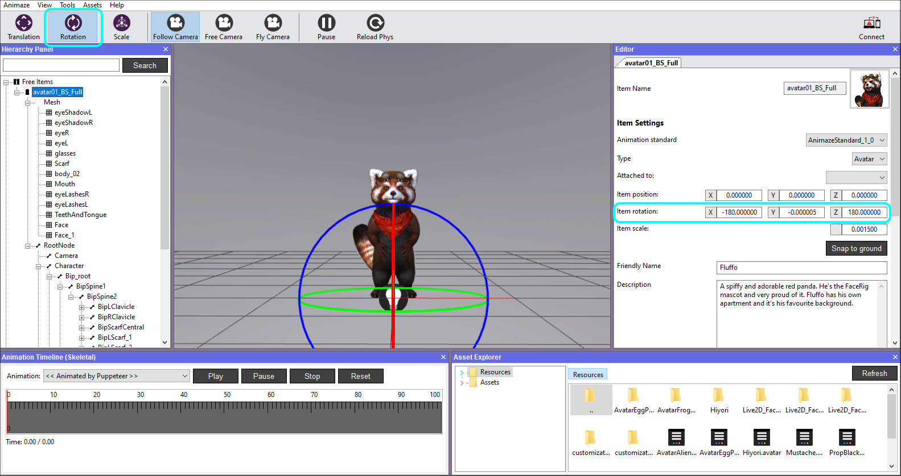
Scale button
When having the avatar selected, this button will resize it uniformly by dragging it with the left mouse button. It can also be resized by manually modifying the value in the Editor panel.
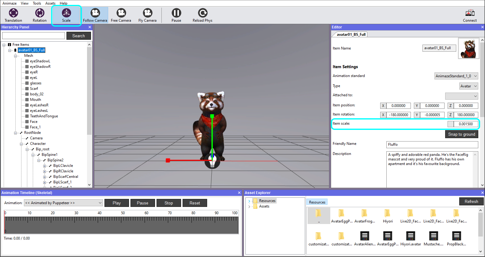
The Editor Panel (Inspector)
This panel, positioned in the right side of the Animaze Editor as default, displays detailed information about the currently selected object in the Hierarchy Panel, including all attached components, materials and their properties, and allows you to customize them, add or remove.
Item Settings - displays the type of the object, location coordinates on the world axis, name and description of a current selected item.
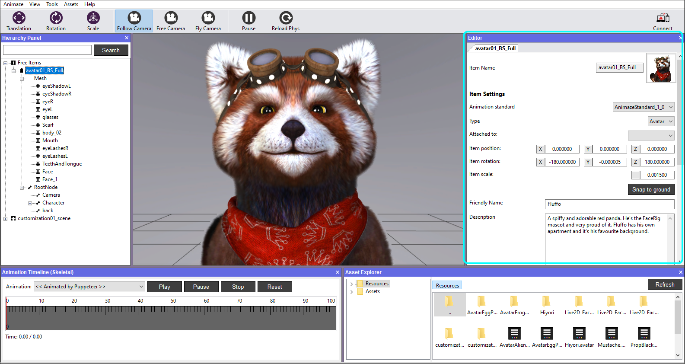
Snap to ground button will bring the item above the debug grid, if it’s not already in that position.
Item Stats - displays the numerical values in terms of vertex, polygons, textures, their sizes, an overall analysis of the current selected item. It also retrieves info on unused textures and a full textures report, which can be exported as a report.
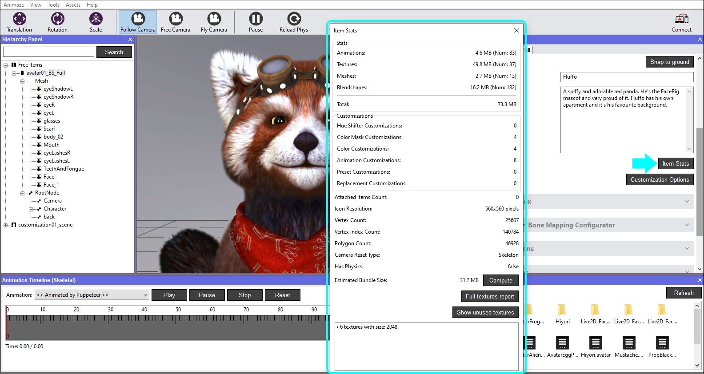
Customization Options
There are several types of customization available:
Color Customization - allows the adding of one or multiple color masks texture on your model. It can be named, described and tagged as a body part or clothing component.
For example, if the hair piece of your model is composed out of 3 meshes, you will have to add 3 color customizations using the same Tag, color mask textures, customized base textures and same values on the RGB Alpha channels when added.
- the Color Mask uses the RGB & Alpha channels, which you can add in order to set the color in the region you want
- areas you paint in black are hidden
- areas you paint in white are visible
- areas you paint in shades of gray appear in various levels of transparency
Animation Customization - allows the adding of one or multiple animations for your model. It can be named, described and tagged as a body or clothing component.
Attachment Customization - allows the adding of Props on designated bones.
Special Actions
Here you can configure (add, change, remove and activate the Special Actions for your avatar.
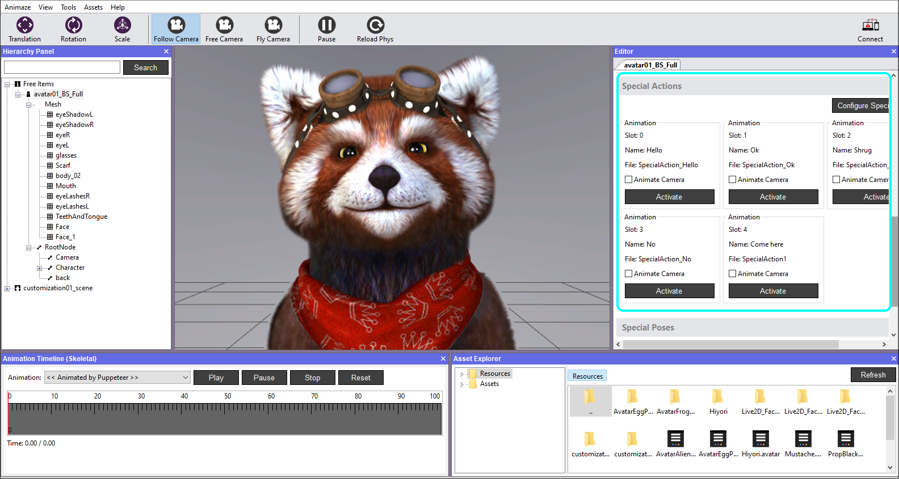
Special Poses
Here you can configure (add, change, rename, remove) and Toggle the Special Poses for your avatar.
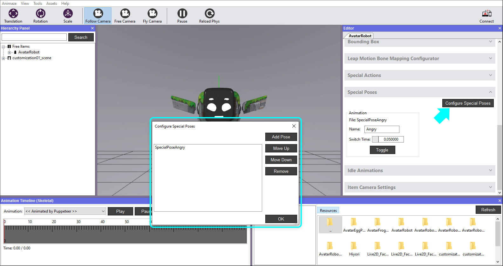
Item Camera Settings
- Use Default Camera
- Field of View – toggle numeric values which will extent/compress the view range in the Viewport.
- Camera Reset Mode
- Default – the look at bone in this mode is BipHead, but it can be changed as desired
- Skeleton – Camera and Look at bone can be chosen as per preference
- Custom – Camera position & rotation values can be set manually if needed. The Snapshot button will make the current display the default camera view for the Reset Camera option when right-clicking the model in the Hierarchy Panel.
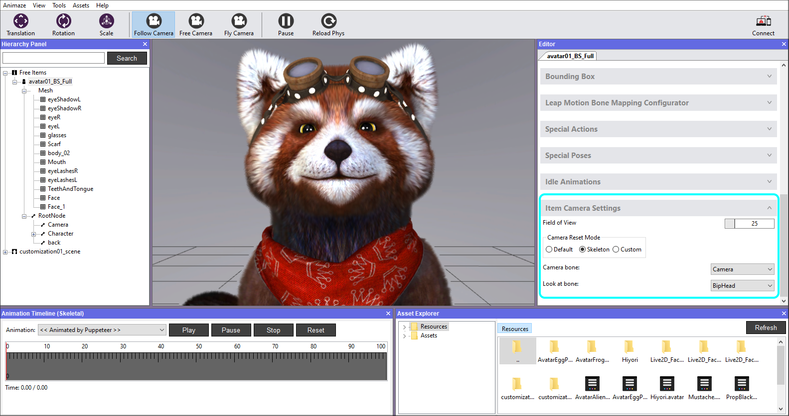
The Animation Panel
In this panel you are able to view and play/stop/pause all the animations in the embedded list of the model in the scene.
Note that for the models built with blendshapes, the animation will be played in its raw state. For example, when playing the Tongue Out animation, the model will not open his mouth to stick out the tongue, but it will pass through the closed mouth.
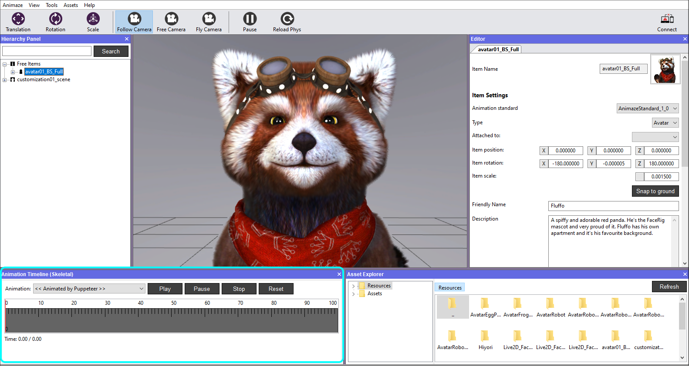
The Asset Explorer Panel
In this panel you can navigate through all the data folders of Animaze Editor.
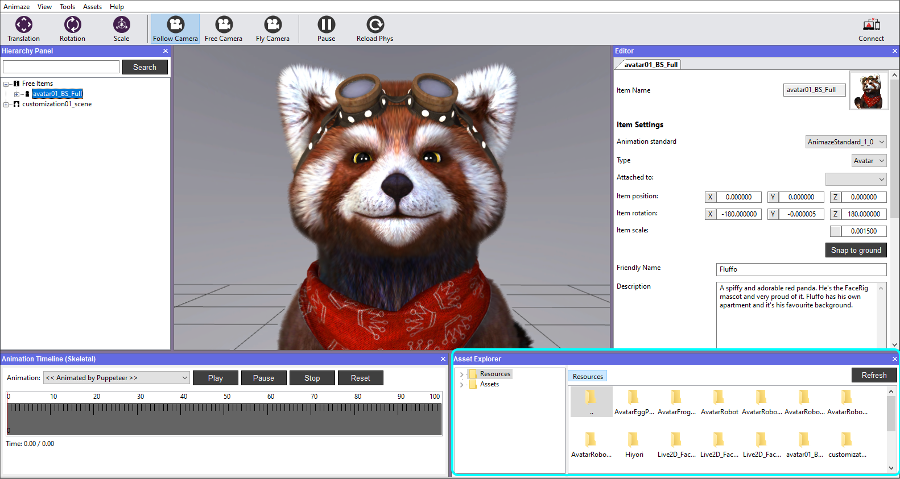
When navigating into the Texture folder, double clicking a texture will open up a Texture Inspector, providing meta-information about it:
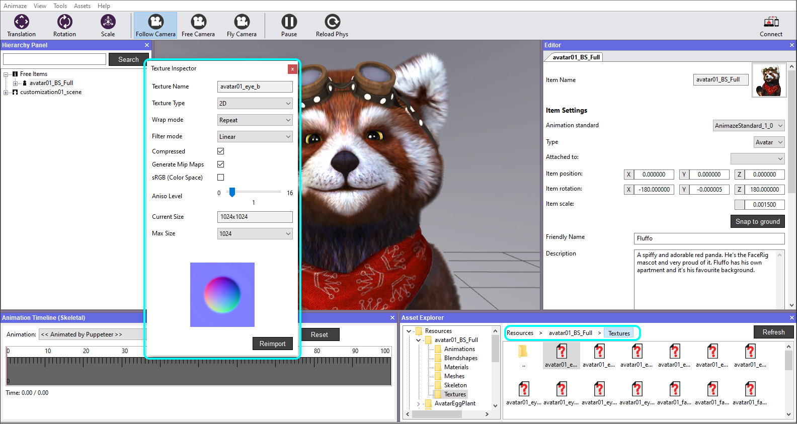
- Texture name
- Texture type
- 2D
- Cube
- Wrap mode - configures the wrapping mode on the texture’s sampler
- Clamp – stretches the Texture’s edges
- Clamp to border – the coordinates that fall outside the range will be given a specified border color
- Repeat – the integer part of the coordinate will be ignored and a repeating pattern is formed
- Mirrored Repeat – the texture will be repeated, but it will be mirrored when the integer part of the coordinate is odd.
- Filter Model - configures the filtering on the texture’s sampler
- Nearest – returns the pixel that is closest to the coordinates
- Linear – returns the weighted average of the 4 pixels surrounding the given coordinates.
- Compressed - toggle between ETC2 encoding compression or uncompressed. Useful for high detail maps like Normal Maps.
- Generate Mip Maps – smaller copies of your texture that have been sized down. It is Texture Inspector recommended that you use them because they result in both a higher quality and higher performance.
- sRGB (Color Space) - mark if this Texture is treated as having sRGB format (make sure source file is sRGB format when toggling this on)
- Aniso Level – increases Texture quality when viewing the Texture at a steep angle.
- Max size - max size of the Texture, if source texture is larger, it will be resized to this value.
Modified values will take effect after pushing the Reimport button.
When navigating into the Animations folder, double clicking an animation will open up an Animation Inspector, containing meta-information on it:
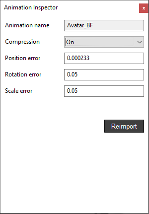
• Animation name
• Compression – when On, it will only consider the animations containing keys
• Position error (expressed in percentage)
• Rotation error (expressed in percentage)
• Scale error (expressed in meters)
Some animations can be very subtle, and when compressed, they might not be visible when triggered.
Tip: Setting the compression to Off, deleting the animtree in the animations folder and reloading the item will solve this issue.
When navigating into the Blendshapes folder, double clicking a blendshape will open up a Blendshape Inspector, where the values for Vertex position error and Normal position error are the thresholds for the blendshape animation.
The thresholds affect the number of vertices that get animated by the blendshape. The thresholds also impact the avatar's bundle size and runtime performance.
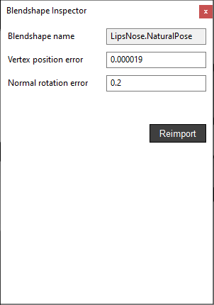